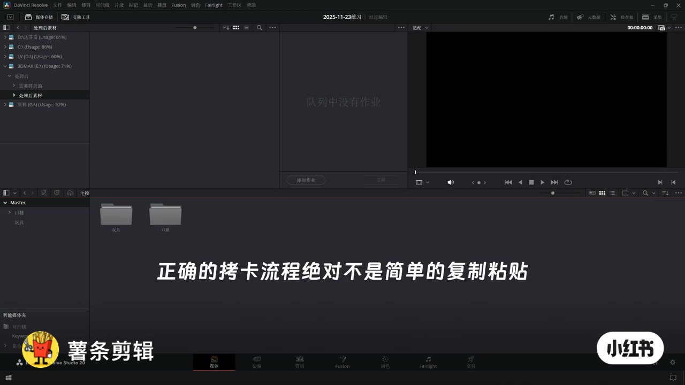
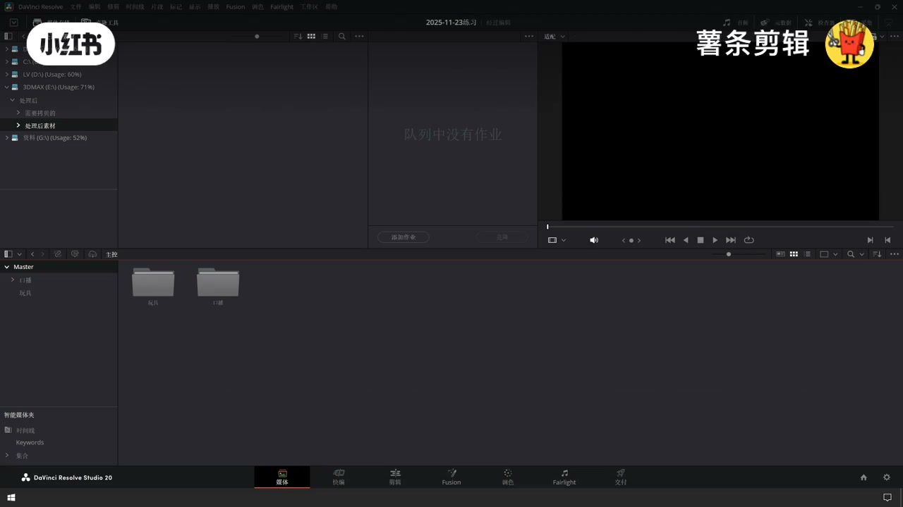
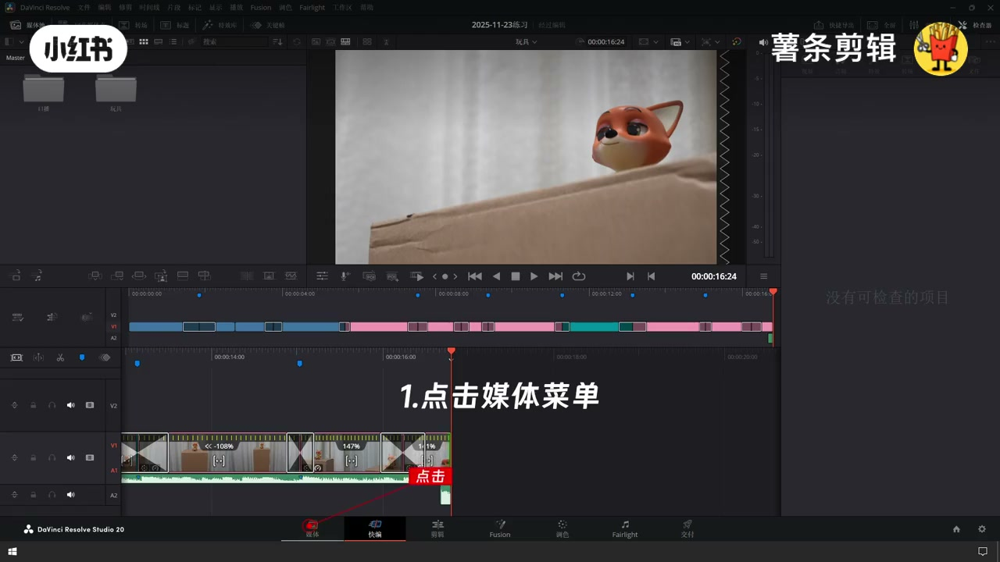
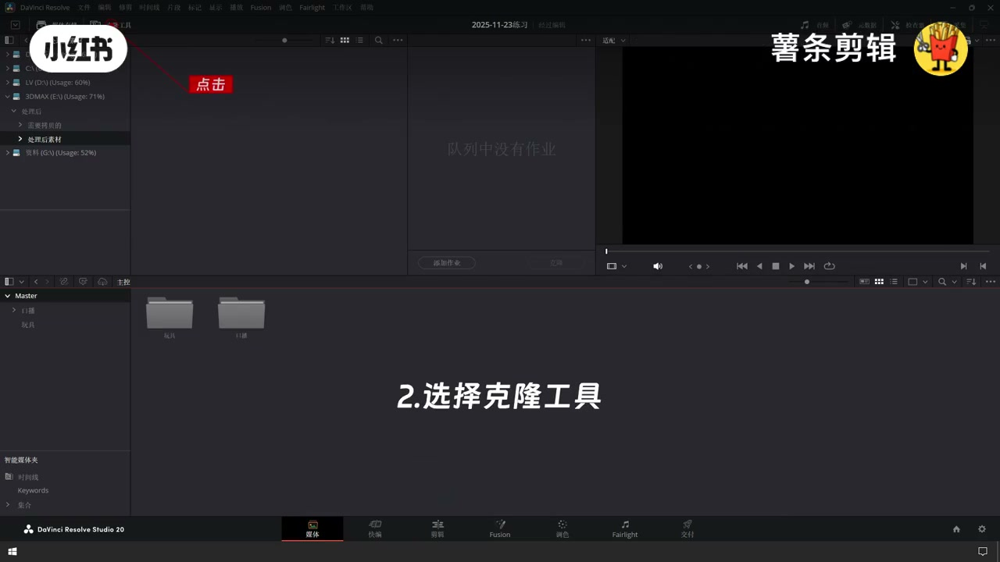
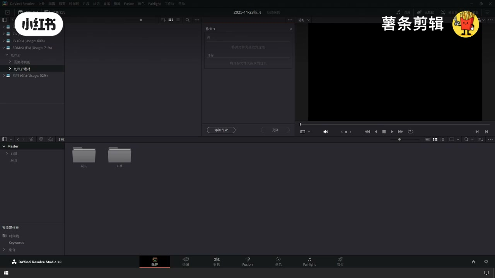
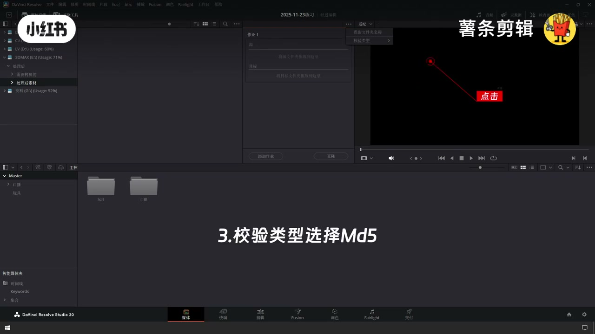
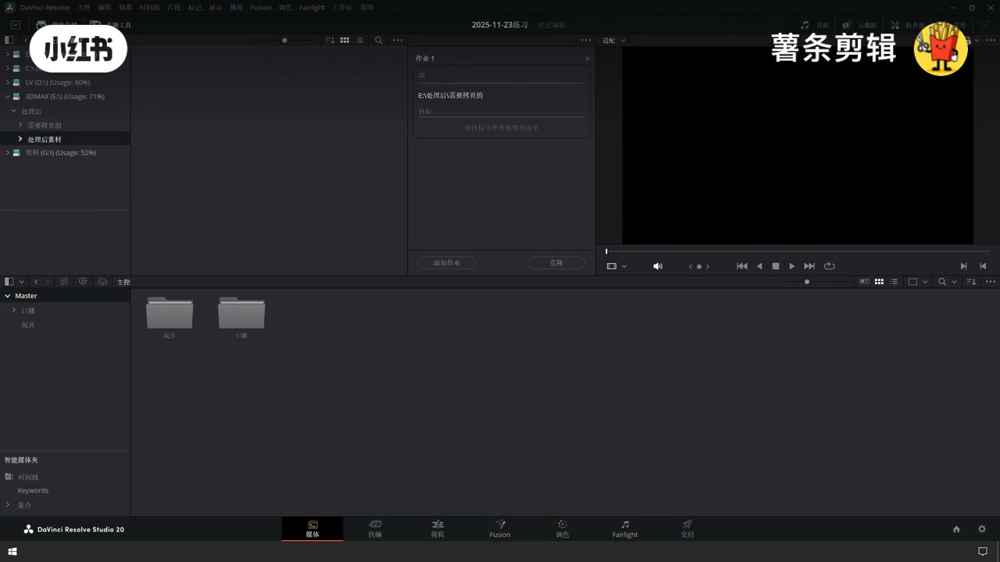
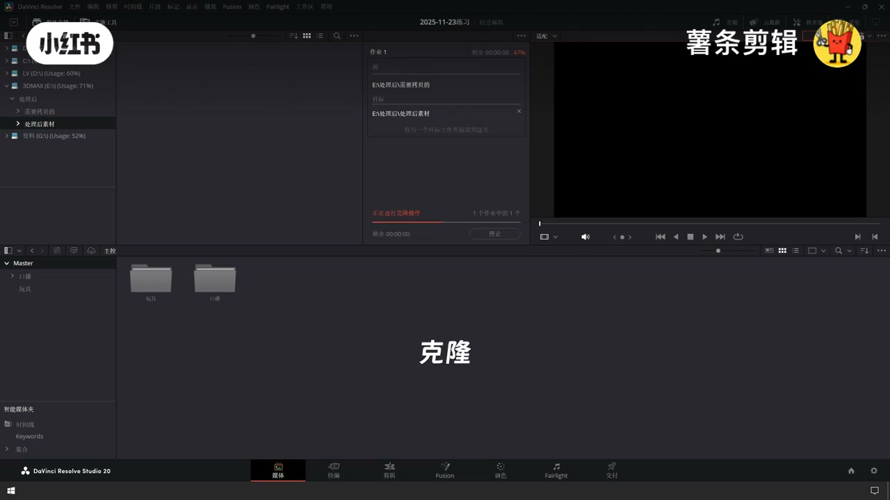

内容要点
严肃数据拷贝不要用系统复制粘贴。达芬奇媒体页用克隆工具：校验类型选 MD5，添加源/目标文件夹后点克隆，确保拷贝可校验、可追溯。
知识结构
[00:00–00:09]
为什么不是复制粘贴
数据无价；用达芬奇严肃拷贝。
[00:09–00:24]
媒体页：克隆工具 + MD5
点媒体→克隆→校验 MD5。
[00:24–00:32]
添加文件夹并开始克隆
添加文件夹 → 点击克隆。
总步骤
- 打开媒体页
- 点克隆工具
- 校验类型选 MD5
- 添加源与目标文件夹
- 点击克隆并等待完成
总结
拷卡=媒体页克隆工具+MD5校验；别靠资源管理器复制粘贴。
适用边界：适合卡到盘/盘到盘的素材归档；不等同于项目归档（.dra）或代理生成。
踩坑：忘记开 MD5 就只是快拷；源目标选反会覆盖；克隆中勿拔卡。
00:00–00:09为什么不是复制粘贴
正确拷卡流程绝对不是简单的复制粘贴。用达芬奇做可校验的数据拷贝，避免坏习惯留下隐患。

[00:02] 正确拷卡不是简单复制粘贴
Correct ingest is not plain copy-paste

[00:06] 媒体页准备：数据无价
Media page: data is priceless
00:09–00:24媒体页：克隆工具 + MD5
①点击媒体菜单；②选择克隆工具；③校验类型选择 MD5。MD5 用于拷完比对，确认比特级一致。

[00:12] 1. 点击媒体菜单
1. Open Media page

[00:16] 2. 选择克隆工具
2. Select Clone Tool

[00:20] 3. 校验类型选择 MD5
3. Validation type = MD5

[00:23] 作业面板准备源与目标
Job panel: set source and destination
00:24–00:32添加文件夹并开始克隆
④添加文件夹（源卡/源目录与目标盘）；⑤点击克隆。进度条走完且校验通过即完成。

[00:27] 4. 添加文件夹
4. Add folders

[00:30] 5. 点击克隆并等待
5. Click Clone and wait
口述/画面要点（9段）
结合 Whisper medium 与画面大字整理；专有名词已校对。
正确的拷卡流程绝对不是简单的复制粘贴
今天分享使用达芬奇如何进行严肃的数据拷贝
数据无价
不要让坏习惯埋下无穷的隐患
1. 点击媒体菜单
2. 选择克隆工具
3. 校验类型选择MD5
4. 添加文件夹
5. 点击克隆